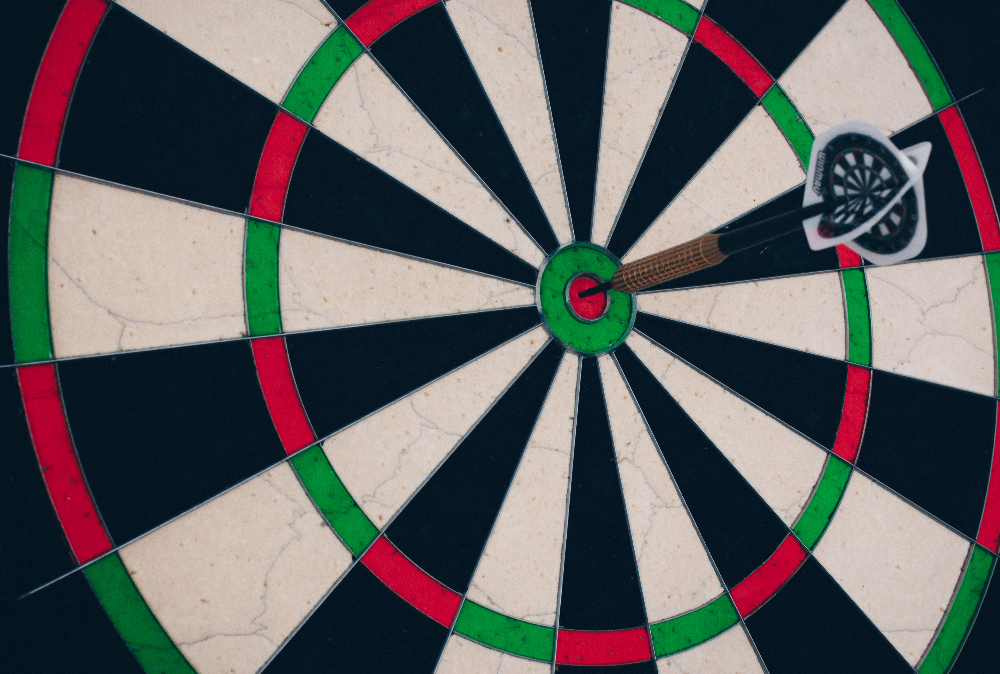

3.중 장기 목표
"나는 경제적 자유를 가진다."
그러기 위해서,매일 해야할 생각과 행동들을 실천하고 기록하겠다.

비즈니스
- 오빠와 나의 글로벌 브랜드 만들기- 오프라인 10000개 지점
- 세계사람들과 소통하는 온라인sns
- 라이프코칭 프로그램
- 인스타그램과 틱톡보다 성장하는 기업이 된다.
- 미국 시장에 상장한다.
- 개인뿐만 아니라 기업들도 참여할 수 있는 공간을 만들어 기업들이 개인들을 위한 프로젝트를 제공하고 개인이 참여함으로써 윈 윈 전략을 사용한다.
- 광고는 절대 금물이다.
- 대기업도 참여하게 만든다.
- 서로의 프로젝트 기록을 공유함으로써 시너지 효과를 만든다.
자산
집과 차-내가 사는 집은 강 앞에 있는 통유리로 된 우드의 아늑함과 화이트색의 모던함을 가진 3층 단독 주택이다.
-내부는 아늑함과 따뜻함이 있는 인테리어로 초록식물들과 우드로 디자인한다.
-1층: 채광이 가득한 거실(스킵플로어구조)과 야외테라스와 연결되는 키친
(폴딩도어),
방6개(침실1/아이들방2/서재1/아이들 계발방1/헬스공간:리포머2대와 헬스기구,전면유리/취미공방:시끄러울 수 있으므로 방음처리가 되는 공간),
욕실2개(욕조와 샤워실이 있는 화장실),
세탁실(세탁실과 연결된 야외에는 햇살이 가득해 빨래가 잘 마른다.이불 빨래를 널 수 있는 큰 건조대가 있다.)
그리고 나무 데크로 되어 있는 테라스와 야외키친(바베큐시설), 넓은 잔디로 된 마당과 야외 수영장, 노천탕이 있다.
야외 테라스에 설치된 어닝을 펼치면 그늘을 만들어 주어서 편하게 티타임을 가지며 대화할 수 있는 공간이 있다.
잔디 마당에는 야자수 두 그루와 집 입구에 내가 좋아하는 긴 나무(이름을 아직 모름)가 일렬로 나열되어있다.
집 입구 팬스는 하얀색 돌로, 대문은 진갈색우드로 되어있다.
-2층: 두 곳으로 분리 되어 있다. 각 분리된 곳에는 한 쪽은 친정식구들, 다른 쪽은 시댁식구들이 놀러왔을 때 사용한다.
각 분리된 곳에는 욕실이 있는 방이 2개씩 있으며 작은 거실과 발코니가 있다.
-3층: 방이 1개 이며 지붕모양으로 세모난 형태의 방으로 창이 크게 나 있어 햇살이 잘 들어온다. 아이들이 꿈을 키울 수 있는 공간으로 사용하거나 명상에 집중할 수 있는 아늑한 공간이다.
-지붕: 태양열시스템과 풍력기를 설치하여 자연 에너지를 사용함으로써 에너지를 절약할 수 있다.
-옥상: 경비행기선착장, 우주선(아마 따로)
-가라지: 반지상 가라지로 더블 가라지 2개가 있다.
한 쪽은 내가 좋아하는 캠핑을 위한 도구들과 캠핑카2대(내가 직접 꾸민 아늑한 느낌의 VW van, 어른들도 편하게 쓸 수 있는 시설이 구비된 최신형 트레일러)가 있다.
다른 쪽은 오빠의 테슬라사이버트럭1대와 나의 테슬라SUV, 그리고 어디든 갈 수 있는 4륜구동차가 있다.
- 강에는 접근이 용이하게 모래가 깔려있어 아이들이 안전하게 놀 수 있다. 제티에서 낚시도 할 수 있다.
- 집과 연결된 요트 선착장에는 2층짜리 숙식이 가능한 최고급 요트가 있어 언제든지 바다에 나갈 수 있다.
부동산
- 호주 부동산 30채 이상 소유(주택10,상가10,아파트10,연립5):투자 목적
- 한국 부동산 10채 이상 소유(아파트10,상가5):투자 목적
- 다른 유럽국가 아시아 미국 등 부동산 10채 이상 소유:투자와 휴가 목적
- 가치 있는 기업가 되기: 2025년12월31일까지 연소득100만달러 만들기
버킷리스트
: 여행 (feat.Camping)
- 호주로 온 첫 번째 목적인 세계여행 떠나기
- 캠핑라이프: 전 세계를 캠핑을 하며 여행하고 싶다.
셀프로 꾸민 이동식 타이니 하우스로 미국과 유럽을 돌고 싶다.
캠핑카로는 호주 한 바퀴 먼저 돌고 그 다음 뉴질랜드 그 다음 목적지를 정해서 여행한다.
- 동남아시아는 최대한 짐을 줄여서 배낭여행을 한다.
- 세계여행하면서 좋아하는 사진도 찍고 영상도 남기고 책도 읽고 기록도 하고 좋은 풍경이 있는 곳에서 맛있는 음식과 커피와 음악을 들으며 여유로운 시간을 보낸다.
- 나만의 caravan and cabin
:카페 (feat. Interior)
- 셀프 인테리어로 나만의 카페 만들기
- 아늑하고 따뜻한 분위기의 카페
- 나무로 되어있는 인테리어
- 직접 로스팅한 원두를 사용해 카페만의 시그니처 커피를 만든다.
:패션
- 어릴 적부터 꿈이었던 디자이너, 하지만 내가 나의 한계를 정해버리고 포기해야만 했다.
- 그 한계를 극복하고 내가 좋아하는 디자인의 옷들을 창안해서 나만의 패션 브랜드를 만든다.
- 보이시하고 박시한 아웃룩스러운 느낌. 맨투맨,후드,티,조끼,바지,긴치마,양말,모자 등